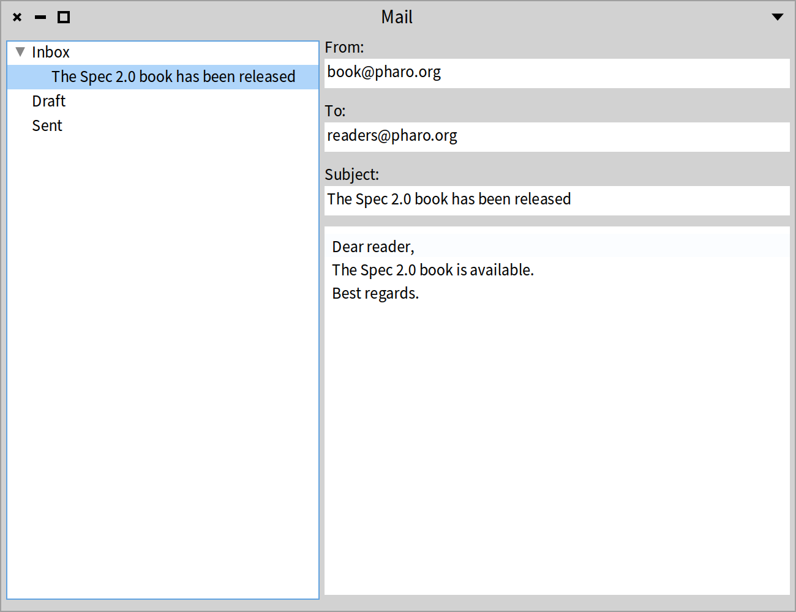
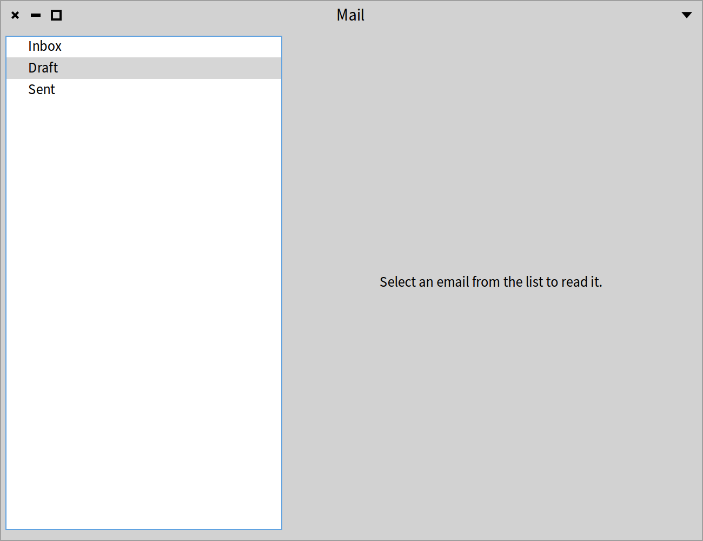
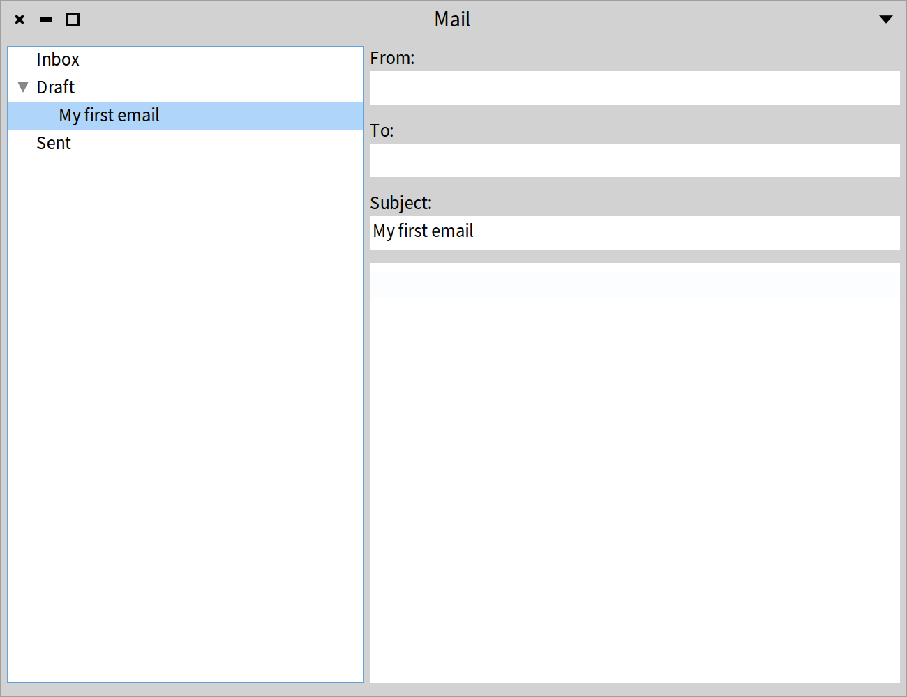

12 A Concrete Case: A Mail Application
We will build a small email client application that we will elaborate on and adapt in subsequent chapters. This small app brings together in real concrete ways much of what we have seen in the previous chapters. Figure 12.1 shows the target application.

The example is extensive, with a lot of classes and methods. We will implement the application bottom-up. We start with the models. Afterward, we will implement the presenters that compose the application. Let's dive in.
12.1 The models
To build the mail client, we need three models (see Figure 12.2):
Emailrepresents an email.MailFolderrepresents a folder that holds emails, like "Inbox", "Draft", and "Sent".MailAccountrepresents a mail account. It holds all the emails.
12.2 Email
In Figure 12.1, we see that the application shows four fields for an email. "From" holds sender. "To" holds the addressee. "Subject" holds the subject of an email. The nameless text field at the bottom-right holds the body of an email. Let's define an Email class to cover these fields.
Object << #Email
slots: { #from . #to . #subject . #body . #status };
package: 'CodeOfSpec20Book'We do not show the accessors for from, to, subject, and body. They are trivial.
Note that there is a fifth instance variable called status. This instance variable will be used to keep track of the status of an email, either "received", "draft", or "sent". These statuses map onto the mail folders in the application, respectively "Inbox", "Draft", and "Sent". We define the following methods to change the status of an email. They will come in handy when we receive, create, or send emails.
Email >> beReceived
status := #receivedEmail >> beDraft
status := #draftEmail >> beSent
status := #sentTo know what the status of an email is, we define three more messages.
Email >> isReceived
^ status = #receivedEmail >> isDraft
^ status = #draftEmail >> isSent
^ status = #sentWe will not define accessors for the status instance variable. The six methods above keep the status nicely encapsulated.
Now we can define the initialize method. It states that a new email is in draft status by default.
Email >> initialize
super initialize.
self beDraftWe define two final methods. They are related to including emails in a tree presenter. The first method answers the string that should be displayed in the list of emails.
Email >> displayName
^ subjectThe second method answers what should be displayed as children in a tree presenter. While a folder has children, i.e. its emails, an email does not have any children, so this method returns an empty array. We do not use tree-related terminology, as it would not be appropriate. Therefore we use content, as in "the content of a folder".
Email >> content
^ Array new12.3 MailFolder
The tree on the left side of the window does not only displays emails. It also displays mail folders, which group emails according to their state. We will define the MailFolder model very simplisticly. It has a name and it holds emails.
Object << #MailFolder
slots: { #emails . #name };
package: 'CodeOfSpec20Book'At initialization time, a MailFolder does not have any emails, and its name is New folder.
MailFolder >> initialize
super initialize.
emails := OrderedCollection new.
name := 'New folder'That defines the default state of a MailFolder instance, but an instance creation method is handy:
MailFolder class >> named: aString emails: aCollection
^ self new
name: aString;
emails: aCollection;
yourselfThe method above needs these accessor methods:
MailFolder >> emails: aCollection
emails := aCollectionMailFolder >> name: aString
name := aStringSimilarly to the Email class, we need some tree-related methods:
MailFolder >> displayName
^ nameMailFolder >> content
^ emailsFrom this implementation, you can see that a MailFolder is just a named container object for emails, which can be used to structure the display of emails in a tree presenter.
Distinguishing emails and folders
In our target application, folders and emails are shown in a tree. A selection in the tree can be a folder or an email. If a presenter has to act differently based on the type of the selection, it needs a way to distinguish folders and emails. To keep things simple, we will introduce two methods on the model classes that we have defined so far.
Email >> isEmail
^ trueFolder >> isEmail
^ false12.4 MailAccount
A MailAccount holds all emails, so the definition of the class is simple:
Model << #MailAccount
slots: { #emails };
package: 'CodeOfSpec20Book'Note that this is the first email client model class that inherits from Model. To keep things simple, the email client application will depend only on a MailAccount instance, not on Email and MailFolder instances.
Initialization is trivial:
MailAccount >> initialize
super initialize.
emails := OrderedCollection newWe know that emails have a status and that the status is used to split emails in separate folders. That is where the following methods come in:
MailAccount >> receivedEmails
^ emails select: [ :each | each isReceived ]MailAccount >> draftEmails
^ emails select: [ :each | each isDraft ]MailAccount >> sentEmails
^ emails select: [ :each | each isSent ]Given that MailAccount is the main model of the application, it defines some actions.
First of all, emails can be fetched. In a real application, emails come from a server. We do not want to go that far. Therefore, we put one email in the account.
MailAccount >> fetchMail
| email |
email := Email new
from: 'book@pharo.org';
to: 'readers@pharo.org';
subject: 'The Spec 2.0 book has been released';
body: 'Dear reader,
The Spec 2.0 book is available.
Best regards.';
beReceived;
yourself.
(emails includes: email) ifFalse: [ emails add: email ].
self changedThis method creates a new email, and gives it the "received" status. Then it adds the email to the emails it already holds. Adding is done conditionally because we do not want the same email appearing twice after fetching multiple times.
Note self changed at the end. It notifies dependents that a MailAccount instance changed in a general way. Again, we like to keep things simple. More specific change messages are possible, but we do not need them in this example application.
The user of the application can create new emails and save them. When they are saved, they are draft emails, as this method defines:
MailAccount >> saveAsDraft: anEmail
anEmail beDraft.
(emails includes: anEmail) ifFalse: [ emails add: anEmail ].
self changedSaving a email as draft is implemented as changing the status to "draft" and adding it to the emails, if it is not present yet. The conditional addition allows saving an email multiple times without adding it multiple times.
The method to send an email is similar to the method to save an email:
MailAccount >> send: anEmail
anEmail beSent.
(emails includes: anEmail) ifFalse: [ emails add: anEmail ].
self changedFinally, an email can be deleted. The implementation is simple. Remove the email from the account and let dependents know.
MailAccount >> delete: anEmail
emails remove: anEmail.
self changedThat concludes our models. Now we can dig into the presenters.
12.5 The presenters
Many presenters are composed of smaller presenters. That is also the case here. We need a presenter to display an email. We also need a presenter to display the tree of emails. When no email is selected in the tree, we like to display an informational message. That is also a presenter. And the overall application, that ties everything together, is also a presenter. So we have five presenters:
EmailPresenterdisplays anEmail, either editable or read-only. The fields are editable when the email is draft. The fields are read-only when the email is received or sent.NoEmailPresenterdisplays an informative message to tell that no email has been selected.MailReaderPresenteris responsible to show an email or the informational message. It uses the two presenters above to achieve that.MailAccountPresenterdisplays the tree of folders and emails.MailClientPresenteris the main presenter. It combines aMailAccountPresenterand aMailReaderPresenterto implement the email client functionality.
12.6 The EmailPresenter
This presenter is fairly easy. It is a view on an Email. Therefore it defines instance variables for all aspects of an Email, except the status.
SpPresenterWithModel << #EmailPresenter
slots: { #from . #to . #subject . #body };
package: 'CodeOfSpec20Book'Note that the presenter class inherits from SpPresenterWithModel, which means that model accessors are available. An instance of EmailPresenter cannot function without an email, as expressed by the initialize method. It sets the model to an empty Email. Remember that a new Email is in draft status by default.
EmailPresenter >> initialize
self model: Email new.
super initializeAs always, we have to define some crucial methods.
EmailPresenter >> initializePresenters
from := self newTextInput.
to := self newTextInput.
subject := self newTextInput.
body := self newTextEmailPresenter >> defaultLayout
| toLine subjectLine fromLine |
fromLine := SpBoxLayout newTopToBottom
add: 'From:' expand: false;
add: from expand: false;
yourself.
toLine := SpBoxLayout newTopToBottom
add: 'To:' expand: false;
add: to expand: false;
yourself.
subjectLine := SpBoxLayout newTopToBottom
add: 'Subject:' expand: false;
add: subject expand: false;
yourself.
^ SpBoxLayout newTopToBottom
spacing: 10;
add: fromLine expand: false;
add: toLine expand: false;
add: subjectLine expand: false;
add: body;
yourselfThe from, to, and subject fields and their associated labels have their own layout. Note that body does not have an associated label. It is clear from the context that the field holds the body of an email. The overall layout is a vertical box layout with 10 pixels white space between the fields.
The method connectPresenters states that changes to fields should be stored in the email, which is held in the model of the EmailPresenter.
EmailPresenter >> connectPresenters
from whenTextChangedDo: [ :text | self model from: text ].
to whenTextChangedDo: [ :text | self model to: text ].
subject whenTextChangedDo: [ :text | self model subject: text ].
body whenTextChangedDo: [ :text | self model body: text ]EmailPresenter inherits from SpPresenterWithModel, which means that we have to state in the modelChanged method what should happen when the model changes. We set the text of the four fields.
EmailPresenter >> modelChanged
from text: (self model from ifNil: [ '' ]).
to text: (self model to ifNil: [ '' ]).
subject text: (self model subject ifNil: [ '' ]).
body text: (self model body ifNil: [ '' ])For convenience later on, we define two extra methods to make the fields editable or read-only.
EmailPresenter >> beEditable
from editable: true.
to editable: true.
subject editable: true.
body editable: trueEmailPresenter >> beReadOnly
from editable: false.
to editable: false.
subject editable: false.
body editable: false12.7 The NoEmailPresenter
This presenter will be used when there is no selection in the tree of folders and emails. It is very simple, as it does not have any functionality.
SpPresenter << #NoEmailPresenter
slots: { #message };
package: 'CodeOfSpec20Book'NoEmailPresenter >> initializePresenters
message := self newLabel
label: 'Select an email from the list to read it.';
yourselfWe put the message in the center of the presenter by using hAlignCenter and vAlignCenter.
NoEmailPresenter >> defaultLayout
^ SpBoxLayout newTopToBottom
hAlignCenter;
vAlignCenter;
add: message;
yourselfThat's all there is to it.
12.8 The MailReaderPresenter
It is time to combine the two previous presenters. That is the responsibility of the MailReaderPresenter.
This illustrates that we can change dynamically layouts to display different subpresenters.
SpPresenter << #MailReaderPresenter
slots: { #content . #noContent };
package: 'CodeOfSpec20Book'As you can see, there are two instance variables to hold instances of the two previous presenter classes. Note that the presenter class inherits from SpPresenter, not SpPresenterWithModel, which means that a MailReaderPresenter does not have a model. We assume that instances of MailReaderPresenter will be told to update themselves.
MailReaderPresenter >> initializePresenters
content := EmailPresenter new.
noContent := NoEmailPresenter newThe presenter has two states. Either there is an Email, or either there isn't. We have a layout for each state. When there is an email, we will use the emailLayout:
MailReaderPresenter >> emailLayout
^ SpBoxLayout newLeftToRight
add: content;
yourselfWhen there is no email, we will use the noEmailLayout:
MailReaderPresenter >> noEmailLayout
^ SpBoxLayout newLeftToRight
add: noContent;
yourselfBy default, we assume there is no email. After all, no method initializes the email. So the defaultLayout is the noEmailLayout.
MailReaderPresenter >> defaultLayout
^ self noEmailLayoutAs mentioned before, we assume that instances of MailReaderPresenter will be told to update themselves. read: is the message to tell them.
MailReaderPresenter >> read: folderOrEmail
(folderOrEmail isNotNil and: [ folderOrEmail isEmail ])
ifTrue: [ self updateLayoutForEmail: folderOrEmail ]
ifFalse: [ self updateLayoutForNoEmail ]The method read: delegates to the methods that do the actual work.
MailReaderPresenter >> updateLayoutForEmail: email
content model: email.
self layout: self emailLayout.
email isDraft
ifTrue: [ content beEditable ]
ifFalse: [ content beReadOnly ]MailReaderPresenter >> updateLayoutForNoEmail
self layout: self noEmailLayoutThese methods simply switch the layout. Note that the first one tells the EmailPresenter to be editable or read-only based on the draft status of an Email.
12.9 The MailAccountPresenter
Now we define a crucial part of the functionality of the mail client application. The MailAccountPresenter holds a tree of folders and emails.
SpPresenterWithModel << #MailAccountPresenter
slots: { #foldersAndEmails };
package: 'CodeOfSpec20Book'Note that the presenter class inherits from SpPresenterWithModel because it will hold a MailAccount instance as its model, which holds the emails to show in the tree. The method initializePresenters defines the tree.
MailAccountPresenter >> initializePresenters
foldersAndEmails := self newTree
roots: Array new;
display: [ :node | node displayName ];
children: [ :node | node content ];
expandRootsLet's dissect the method.
- By default, the tree has no roots. Later we will set as roots the draft, inbox, and sent elements (see method
modelChangedbelow). - The tree presenter uses the
display:block to fetch a string representation of each tree node. In the block, we send the messagedisplayNamethat we defined on the model classesEmailandFolder. - The tree presenter uses the
childrenblock to fetch the children of a tree node. Folders have children, Emails do not. In the block, we sendcontent. Remember that aFolderinstance will answer its emails, and anEmailinstance answers an empty array, which means that emails are the leaves of the tree. - We send the message
expandRootsto expand the whole tree.
The layout is a simple box layout with the tree presenter:
MailAccountPresenter >> defaultLayout
^ SpBoxLayout newTopToBottom
add: foldersAndEmails;
yourselfBy default, the tree is empty. When the model changes, the tree should be updated. Since the class MailAccountPresenter inherits from the class SpPresenterWithModel, we have the method modelChanged at our disposal.
MailAccountPresenter >> modelChanged
| inbox draft sent |
inbox := MailFolder named: 'Inbox' emails: self model receivedEmails.
draft := MailFolder named: 'Draft' emails: self model draftEmails.
sent := MailFolder named: 'Sent' emails: self model sentEmails.
foldersAndEmails
roots: { inbox . draft . sent };
expandRootsThe model is a MailAccount instance. The method filters the emails of that instance based on their status and creates folders, each holding emails with the same status. The method sends receivedEmails, draftEmails, and sentEmails. The corresponding methods were defined when we defined the MailAccount class. The three folders become the roots of the tree, and the roots are expanded with the expandRoots message so that the user sees the whole tree.
When implementing a presenter with a tree, or any widget that has a selection, it is always a good idea to define a method that allows reacting to selection changes. We will need the method later to connect the MailAccountPresenter to the MailReader.
MailAccountPresenter >> whenSelectionChangedDo: aBlock
foldersAndEmails whenSelectionChangedDo: aBlockThe method simply delegates to the tree presenter held by foldersAndEmails.
We define two extra methods related to selection that will come in handy later on. The first method returns a boolean that indicates whether an email is selected. We only have two levels in the tree, so if the path to the selection has two elements, we know that an email has been selected. The second method simply returns the selected item in the tree.
MailAccountPresenter >> hasSelectedEmail
^ foldersAndEmails selection selectedPath size = 2MailAccountPresenter >> selectedItem
^ foldersAndEmails selectedItemApart from making selections, the MailAccountPresenter does not provide any functionality. Not yet. We will introduce it later when we need it.
We are almost there. One presenter to go.
12.10 The MailClientPresenter
This presenter combines all the presenters that we have introduced so far. We start with an initial version of the presenter class. In subsequent sections, we will elaborate on the class.
SpPresenterWithModel << #MailClientPresenter
slots: { #account . #reader . #editedEmail };
package: 'CodeOfSpec20Book'The class inherits from SpPresenterWithModel. The model is a MailAccount instance. There are three instance variables. The first two hold presenters. The third holds the email that is being edited.
MailClientPresenter >> initializePresenters
account := MailAccountPresenter on: self model.
reader := MailReaderPresenter newWe use a paned layout, with 40% of the space allocated to the MailAccountPresenter:
MailClientPresenter >> defaultLayout
^ SpPanedLayout newLeftToRight
positionOfSlider: 40 percent;
add: account;
add: reader;
yourselfLet's connect the two presenters so that a selection in the tree on the left results in showing details of the selection on the right. We introduce two methods: connectPresenters and updateAfterSelectionChangedTo:
- The method
connectPresenterssends the selected tree item to thereaderand uses the following method. - The method
updateAfterSelectionChangedTo:to allow for post selection actions.
MailClientPresenter >> connectPresenters
account whenSelectionChangedDo: [ :selection |
| selectedFolderOrEmail |
selectedFolderOrEmail := selection selectedItem.
reader read: selectedFolderOrEmail.
self updateAfterSelectionChangedTo: selectedFolderOrEmail ]In the second method updateAfterSelectionChangedTo:, we use several messages that we defined earlier.
MailClientPresenter >> updateAfterSelectionChangedTo: selectedFolderOrEmail
editedEmail := (self isDraftEmail: selectedFolderOrEmail)
ifTrue: [ selectedFolderOrEmail ]
ifFalse: [ nil ]
The method updateAfterSelectionChangedTo: keeps track of the email if it is a draft email, so that the presenter has it handy when needed. The method invokes the method isDraftEmail: (defined below) to determine whether the tree selection is a draft email.
^ folderOrEmailOrNil isNotNil and: [ folderOrEmailOrNil isEmail and: [ folderOrEmailOrNil isDraft ] ]The method states that the content of the MailReaderPresenter held by reader depends on the selection in the tree. If an email is selected, the reader shows its fields. If there is no selection, or a folder is selected, the reader shows the informational message. When a draft email is selected, we put it in the editedMail instance variable, which will be handy when we start performing actions on the selected email.
Let's also define the method initializeWindow, so that the window has a title and it is big enough for reading emails easily.
MailClientPresenter >> initializeWindow: aWindowPresenter
aWindowPresenter
title: 'Mail';
initialExtent: 650@50012.11 First full application
After typing all the code, it is time to open the mail client.
(MailClientPresenter on: MailAccount new) openFigure 12.3 shows the result. There is nothing much to see. Only three empty folders. Selecting one will still show the informational message on the right.
We can do better. Let's add a draft email with the saveAsDraft: message that we defined in MailAccount.
account := MailAccount new.
email := Email new subject: 'My first email'.
account saveAsDraft: email.
(MailClientPresenter on: account) openThat opens a window with a draft email. After selecting it, the window looks as shown in Figure 12.4.

12.12 Conclusion
This was a long chapter with an extensive example with multiple models and multiple presenters. It lays the foundation for the next chapters, where we will extend the main presenter and adapt the subpresenters to explain more Spec functionality.